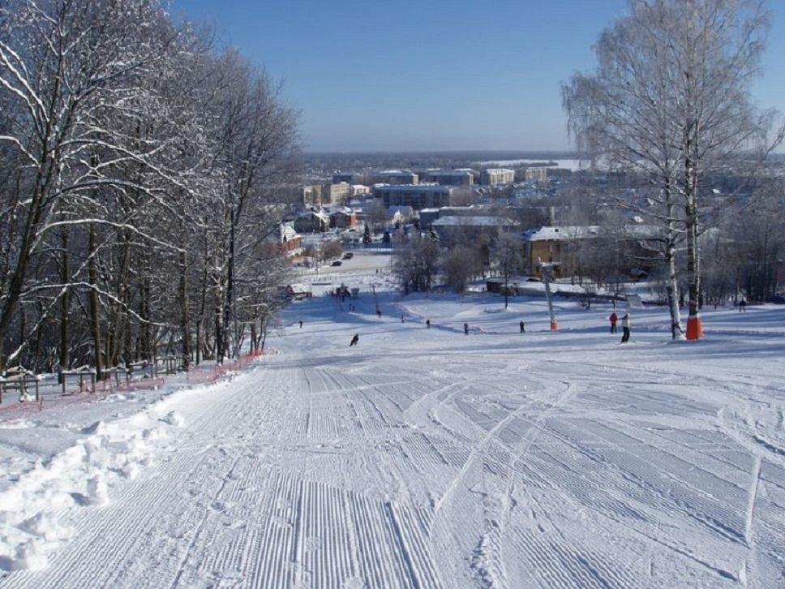
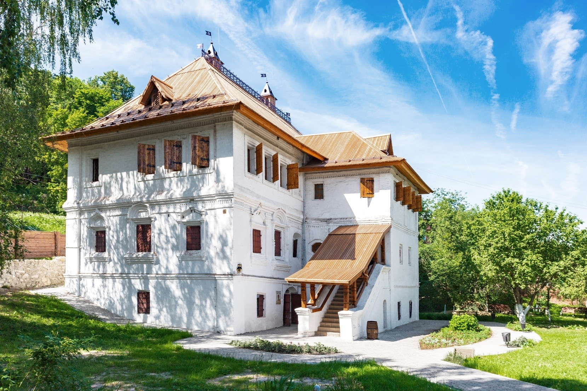

Гороховец
Гороховец известен с 1158 года. Первоначальным ядром города был расположенный на Никольской горе детинец, окруженный земляными валами высотой пять метров. В 1239 году монголо-татарская орда полностью сожгла город. В XV веке Гороховец принадлежал сначала нижегородскому, а потом московскому князю как центр волости. Однако в 1539 году он вновь был разорен, на этот раз казанскими татарами.

По легенде, когда казанские татары осаждали Гороховец, то над горой в лучах заходящего солнца возник образ огромного воина с мечом в руках. Враги в панике бежали, а место с той поры стало называться Пужаловой горой. В настоящее время в этом месте расположен парк и горнолыжный курорт, который в зимнее время могут посетить все желающие.

Исторический музей города расскажет вам о становлении Гороховца и его окрестностей. Расположение музея довольно необычно, он находится прямо в знаменитой церкви Иоанна Предтече. После экскурсии можно пойти осматривать Благовещенский собор, который совсем рядом с музеем.
